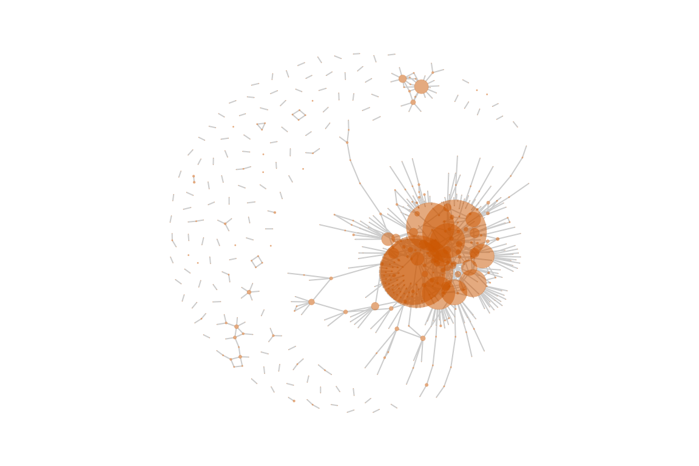

Introduction to the conflictNet Package
Ha Eun Choi, Cassy Dorff, Colin Henry, and Shahryar Minhas
2022-12-15
netify.RmdIn this document, we provide a brief a tutorial on how to use the conflictNet package. conflictNet can be installed via devtools:
Structuring data for conflictNet
data(event_data)
head(event_data)
#> data_id cname cowc event_date year
#> 1 6714129 Somalia SOM 2019-12-31 2019
#> 2 7187987 Congo - Kinshasa DRC 2019-12-31 2019
#> 3 7210326 Sudan SUD 2019-12-31 2019
#> 4 7122303 Congo - Kinshasa DRC 2019-12-31 2019
#> 5 7099295 South Sudan SSD 2019-12-31 2019
#> 6 6714017 Somalia SOM 2019-12-31 2019
#> actor1
#> 1 Al Shabaab
#> 2 Military Forces of the Democratic Republic of Congo (2019-)
#> 3 Awlad Mansour Misseriya Ethnic Militia (Sudan)
#> 4 Military Forces of the Democratic Republic of Congo (2019-)
#> 5 SPLM-In Opposition: Sudan People's Liberation Movement-In Opposition
#> 6 Al Shabaab
#> actor2
#> 1 Military Forces of Somalia (2017-)
#> 2 ADF: Allied Democratic Forces
#> 3 Awlad Gaid Misseriya Ethnic Militia (Sudan)
#> 4 Mayi Mayi Militia (Charles)
#> 5 SPLM-In Opposition: Sudan People's Liberation Movement-In Opposition (Splinter Faction)
#> 6 AMISOM: African Union Mission in Somalia (2007-) (Burundi)
#> admin1 admin2 latitude longitude fatalities source
#> 1 Lower Shabelle Afgooye 2.3963 45.0159 0 acled
#> 2 Nord-Kivu Beni 0.6287 29.9411 1 acled
#> 3 South Darfur Bielel 12.2443 25.1096 3 acled
#> 4 Nord-Kivu Rutshuru -1.1869 29.4461 0 acled
#> 5 Upper Nile Maiwut 8.3833 33.7833 4 acled
#> 6 Lower Shabelle Marka 1.7493 44.7437 0 acled
conflictNet::get_adjacency()
Using get_adjacency(), you can convert a dyadic data
into a network in various formats including
- a cross-sectional, undirected and unweighted network
- a cross-sectional, undirected and weighted network
Arguments
This function takes in a single data.frame:
dyad_data.
get_adjacency(
dyad_data,
actor1, actor2,
weight=NULL, symmetric=TRUE,
isolates=FALSE, diag_to_NA=TRUE, missing_to_zero=TRUE
)-
dyad_datais a dyadic data.frame and it should have at least the following variables:
-
actor1: character indicating actor 1 variable in the data -
actor2: character indicating actor 2 variable in the data
Others:
weight: character indicating whether these are weighted edges, default isweight=NULL.symmetric: logical indicating whether ties are symmetric, default is TRUEisolates: logical indicating whether to include isolatesdiag_to_NA: logical indicating whether diagonals should be set to NA, default is TRUEmissing_to_zerological indicating whether missing values should be set to zero, default is TRUE
It returns an adjacency matrix using R’s matrix
class.
Longitudinal variants of get_adjacency()
For longitudinal networks we have two variants of this function:
conflictNet::get_adjacency_list()
get_adjacency_list(
dyad_data,
actor1, actor2,
time,
actor_time_uniform=TRUE,
actor_years=NULL,
weight=NULL, symmetric=TRUE,
isolates=FALSE, diag_to_NA=TRUE, missing_to_zero=TRUE
)get_adjacency_list returns a list of adjacency matrices
in which the actor composition in the network can vary over time. This
function has a few additional parameters:
-
time: character indicating time variable in the data -
actor_time_uniform: logical indicating whether to assume actors are the same across the full time series observed in the data TRUE means that actors are the same across the full time series observed in the data. FALSE means that actors come in and out of the observed data and their “existence” should be determined by the data, meaning that their first year of existence will be determined by the time point of their first event and their last year of existence by the time point of their last event. -
actor_years: a data.frame indicating start and end time point for every actor, this can be created using get_actor_time_info.R, unless provided this will estimated for the user based on their choice of actor_time_uniform.
conflictNet::get_adjacency_array()
get_adjacency_array <- function(
dyad_data,
actor1, actor2,
time,
weight=NULL, symmetric=TRUE,
isolates=FALSE, diag_to_NA=TRUE, missing_to_zero=TRUE
)get_adjacency_array returns a three-dimensional array in
which the first two dimensions correspond to actors and the third time.
This function should only be used if actor composition is static over
time.
Example data
This is a basic example which shows you how to convert a dyadic dataset into a network format using a yearly dataset of conflictual events for Nigeria from ACLED.
Note that `get_adjacency()’ does not support tibbles. Please convert your tibble into a data frame first.
conflict_nigeria <- event_data %>% filter(cname == 'Nigeria') %>% as.data.frame()
head(conflict_nigeria)
#> data_id cname cowc event_date year
#> 1 6713513 Nigeria NIG 2019-12-28 2019
#> 2 6713514 Nigeria NIG 2019-12-28 2019
#> 3 7073765 Nigeria NIG 2019-12-27 2019
#> 4 7073766 Nigeria NIG 2019-12-25 2019
#> 5 7261566 Nigeria NIG 2019-12-24 2019
#> 6 6713511 Nigeria NIG 2019-12-24 2019
#> actor1
#> 1 Imiakabu Communal Militia (Nigeria)
#> 2 Imiakabu Communal Militia (Nigeria)
#> 3 Military Forces of Nigeria (2015-)
#> 4 Military Forces of Nigeria (2015-)
#> 5 Unidentified Armed Group (Nigeria)
#> 6 Islamic State (West Africa) and/or Boko Haram - Jamatu Ahli is-Sunnah lid-Dawatai wal-Jihad
#> actor2
#> 1 Police Forces of Nigeria (2015-)
#> 2 Police Forces of Nigeria (2015-)
#> 3 Islamic State (West Africa) and/or Boko Haram - Jamatu Ahli is-Sunnah lid-Dawatai wal-Jihad
#> 4 Islamic State (West Africa) and/or Boko Haram - Jamatu Ahli is-Sunnah lid-Dawatai wal-Jihad
#> 5 Civilian JTF: Civilian Joint Task Force
#> 6 Military Forces of Nigeria (2015-)
#> admin1 admin2 latitude longitude fatalities source
#> 1 Edo Etsako East 7.2118 6.4366 0 acled
#> 2 Edo Etsako East 7.2118 6.4366 5 acled
#> 3 Borno Bama 11.5221 13.6856 1 acled
#> 4 Borno Gwoza 11.2500 13.4167 10 acled
#> 5 Bayelsa Ogbia 4.7832 6.3132 1 acled
#> 6 Borno Biu 10.6779 12.1569 2 acledA cross-sectional, undirected and unweighted network
Here get_adjacency() will return an adjacency matrix
with 1s whenever there is a tie between a pair of actors and 0s
otherwise at any point in the years included in the data.
df_adj <- get_adjacency(conflict_nigeria, "actor1", "actor2",
symmetric = TRUE,
diag_to_NA = FALSE)
#> ! Warning: When `weight` is not supplied, network edges represent binary interactions between actors.A cross-sectional, undirected and weighted network
To create a weighted network, we need to specify weight.
In this example, we use fatalities as our weight variable
and begin by generating a sum of fatalities across the dataset using
dplyr.
conflict_nigeria_weighted <- conflict_nigeria %>%
group_by(actor1, actor2) %>%
summarise(fatalities=sum(fatalities),
year = unique(year)) %>%
data.frame()
#> `summarise()` has grouped output by 'actor1', 'actor2'. You can override using
#> the `.groups` argument.
head(conflict_nigeria_weighted)
#> actor1 actor2
#> 1 Abogbe Communal Militia (Nigeria) Agbaduma Communal Militia (Nigeria)
#> 2 Abugbe (Agatu) Agbaduma (Agatu)
#> 3 AC: Action Congress AD: Alliance for Democracy
#> 4 AC: Action Congress Labour Party
#> 5 AC: Action Congress PDP: Peoples Democratic Party
#> 6 AC: Action Congress PDP: Peoples Democratic Party
#> fatalities year
#> 1 3 2019
#> 2 25 2019
#> 3 0 2013
#> 4 0 2013
#> 5 4 2013
#> 6 4 2012Specify parameter weight = "fatalities" and everything
else is the same as above.
df_fatal_adj <- get_adjacency(conflict_nigeria_weighted, "actor1", "actor2",
weight="fatalities", symmetric = TRUE,
diag_to_NA = FALSE)
#> ! Warning: repeating dyads in the dataset. Set `sumDyad = TRUE` to sum the `weight` variable across multiple repeating dyads.A longitudinal, undirected and unweighted network
By setting longitudinal = TRUE, the function returns a
list of adjacency matrices for all time points (i.e. years) in a
dataset. An important choice a user needs to make is the actor
composition of the network over time. The default assumptions in
get_adjacency_list are that actors are static over time.
If, however, actor_time_uniform is set to FALSE in this
function then actors will only exist in time points including and
between their first and last recorded interaction.
Users can also specify when actors should enter and exit the network
themselves by creating a data.frame with three columns:
actor, ‘min_time’, and max_time. Here is an
example of what such a data.frame should look like:
#> actor min_time max_time
#> 1 Abakpa Nike Communal Militia (Nigeria) 2018 2018
#> 2 Abanwan Communal Militia (Nigeria) 2018 2018
#> 3 Abba-Omega Communal Militia (Nigeria) 2019 2019
#> 4 Abogbe Communal Militia (Nigeria) 2019 2019
#> 5 Abugbe (Agatu) 2019 2019
#> 6 AC: Action Congress 2008 2013Below we construct a list of adjacency matrices assuming that each actor exists across the duration of the data.
long_adj <- get_adjacency_list(conflict_nigeria, "actor1", "actor2",
time = "year",
weight=NULL, symmetric = TRUE,
actor_time_uniform=TRUE,
diag_to_NA = FALSE)
#> ! Warning: `actor_time_uniform` is set to TRUE. If the number of actors DO NOT change over time in your network, use `get_adjacency_array` (see documentation).
#> ! Warning: repeating dyads in the dataset. Supply `weight` variable AND set `sumDyads=TRUE` (see documentation section XX).A longitudinal, undirected and weighted network
One additional longitudinal example with a weighted network.
long_conflict_nigeria_weighted <- conflict_nigeria %>%
group_by(actor1, actor2, year) %>%
summarise(fatalities=sum(fatalities)) %>%
data.frame()
#> `summarise()` has grouped output by 'actor1', 'actor2'. You can override using
#> the `.groups` argument.
head(long_conflict_nigeria_weighted)
#> actor1 actor2 year
#> 1 Abogbe Communal Militia (Nigeria) Agbaduma Communal Militia (Nigeria) 2019
#> 2 Abugbe (Agatu) Agbaduma (Agatu) 2019
#> 3 AC: Action Congress AD: Alliance for Democracy 2013
#> 4 AC: Action Congress Labour Party 2013
#> 5 AC: Action Congress PDP: Peoples Democratic Party 2012
#> 6 AC: Action Congress PDP: Peoples Democratic Party 2013
#> fatalities
#> 1 3
#> 2 25
#> 3 0
#> 4 0
#> 5 0
#> 6 4
df_long_unweight_adj <- get_adjacency_list(
long_conflict_nigeria_weighted, "actor1", "actor2", time = "year", weight="fatalities")
#> ! Warning: repeating dyads in the dataset. Supply `weight` variable AND set `sumDyads=TRUE` (see documentation section XX).Network visualization
Using this adjacency matrix or matrices, you can create a
nice-looking(??) network visualization. Here we use
igraph:: to visualize a network.
Network graph
A cross-sectional, undirected, and unweighted network visualization:
# convert into an igraph object
N <- graph_from_adjacency_matrix(df_adj, mode = "undirected")
# delete isolates
N <- delete.vertices(N, which(degree(N)==0))
#set layout
l = layout_with_fr(N)
par(mar=c(0,0,0,0))
plot(simplify(N), # remove loops and multiple edges
vertex.color=adjustcolor("#cc5500", alpha.f=.5),
vertex.size=5*(degree(N)/10), vertex.frame.color = NA, vertex.label = "",
edge.color="grey80", layout = l)
A cross-sectional, undirected, and weighted network visualization:
N2 <- graph_from_adjacency_matrix(df_fatal_adj, mode = "undirected", weighted = TRUE)
N2 <- delete.vertices(N2, which(degree(N2)==0))
l = layout_with_fr(N2)Centrality measures
Here are top 20 actors based on their eigenvector centrality scores.
V(N)$degree <- degree(N) # Degree centrality
V(N)$eig <- eigen_centrality(N)$vector # Eigenvector centrality
centrality <- data.frame(row.names = V(N)$name,
degree = V(N)$degree,
eigenvector = V(N)$eig)
centrality <- centrality[order(row.names(centrality)),]
eigen_top20 <- head(centrality[order(-centrality$eigenvector),], n=20)
head(eigen_top20)
#> degree eigenvector
#> Pastoralists (Nigeria) 81 1.0000000
#> Unidentified Armed Group (Nigeria) 72 0.9562966
#> Fulani Ethnic Militia (Nigeria) 74 0.9364504
#> Police Forces of Nigeria (1999-2015) 54 0.7512722
#> Military Forces of Nigeria (1999-2015) 39 0.6530462
#> Unidentified Communal Militia (Nigeria) 19 0.5598625
eigen_p <- eigen_top20 %>%
rownames_to_column('actor') %>%
ggplot(aes(x = reorder(actor, eigenvector), y = eigenvector)) +
geom_bar(stat = "identity", position=position_dodge()) +
labs(
x = "",
y = "Eigenvector Centrality Score",
title = "",
color = "") +
coord_flip() +
theme_bw() +
theme(
panel.border = element_blank(),
axis.ticks = element_blank())
eigen_pA List object like long_adj which is a longitudinal,
undirected and unweighted network needs a bit more work:
# convert into igraph format using lapply
graph_list = lapply(long_adj, function(x){ graph_from_adjacency_matrix(x) } )
# create a function for transitivity, average degree, and average distance
centrality_funcs <- function(x) {
c(transitivity = transitivity(x),
average_degree = mean(degree(x)),
distance = mean_distance(x))
}
# put graph_list into a centrality_funcs
centrality_list = lapply(graph_list, centrality_funcs)
# convert centrality_list into a matrix
centrality_scores = t(do.call(cbind, centrality_list))
# convert into a data.frame
centrality_scores = as.data.frame(centrality_scores)
# manually create a year variable
centrality_scores$year = 2001:2019
# reshape the data.frame for plotting
centrality_scores <- centrality_scores %>%
pivot_longer(
cols = c("transitivity", "average_degree", "distance"))
head(centrality_scores)
#> # A tibble: 6 × 3
#> year name value
#> <int> <chr> <dbl>
#> 1 2001 transitivity 0.0517
#> 2 2001 average_degree 0.258
#> 3 2001 distance 1.78
#> 4 2002 transitivity 0.0273
#> 5 2002 average_degree 0.330
#> 6 2002 distance 3.30This shows transitivity, average degree, and average distance scores of the Nigerian conflict network from 2001 to 2019.
central_plot <- ggplot(centrality_scores, aes(x = year,
y = value)) +
geom_line() +
geom_point() +
labs(
x = "",
y = "",
title = "",
color = "") +
theme_bw() +
theme(
panel.border = element_blank(),
axis.ticks = element_blank()) +
facet_wrap(name~., scales = "free", ncol = 1)
central_plot